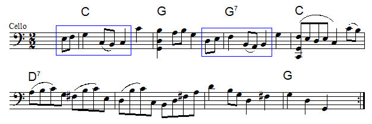

| Bourree |
| This example illustrates fractal structure with respect to phrasing. |
| Phrasing deals with the natural grouping of notes into contextual patterns that often reflect implied harmony. |
| Although we shall not attempt a rigorous analysis of phrasing, We can develop some intuition for
this relation. |
| We examine the first eight measures of the Bourree I from Bach's Cello Suite No. 3. |
|  |
|
| The chord symbols have been added for reference. |
| First we observe a two-measure pattern. |
| Short (2 measures) |
Short (2 measures) |
Long (4 measures) |
|
| Next we observe a six-note pattern. |
| Short (2 beats) |
Short (2 beats) |
Long (4 beats) |
|
| Finally we observe a two-beat pattern. |
| Short (1 half beat) |
Short (1 half beat) |
Long (1 beat) |
|
|
|
| Here is a Cantor map of the first sixteen measures of the piece. |
| The red regions represent eight beats (2 measures), the blue regions, 2 beats,
and the yellow regions, half beats (eighth notes). The white regions represent the everything that is not part of the short phrase at each scale of measurement. |
|
| This pattern, in fact, continues to a fourth level to the extent that the first eight measures repeat, giving
us two short sections that are then followed by an extended and harmonically different 20 measure, long section. |
| Interestingly, although Bach wrote the piece with a repeat symbol at the end of this 20 measure section, in practice it is
often performed without the repeat. |
| (Thanks to Silas Meredith (Yale '04) for identifying this example.) |